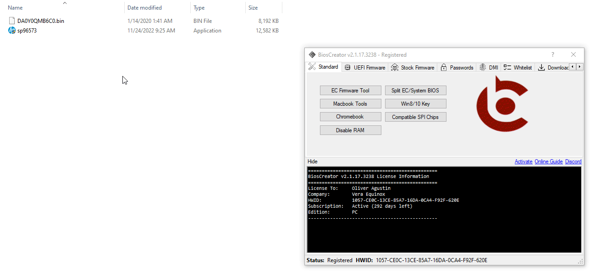

<style>
    .center {
        display: block;
        margin-left: auto;
        margin-right: auto;
        width: 50%;
      }

    a {
      text-decoration: none;
      display: inline-block;
      padding: 8px 16px;
    }
    
    a:hover {
      background-color: #ddd;
      color: black;
    }
    
    .previous {
      background-color: #f1f1f1;
      color: black;
    }
    
    .next {
      background-color: #160042;
      color: white;
    }
    </style>

<section class="support section bg-gray">
	<div class="container">
    <div class="container" style="text-align:justify; margin-bottom:50px;">
      <p>If you want to preserve the unique information for your laptop, you can copy this information from the backup firmware to the stock firmware you just created.</p>
      <br>
      <h4 class="join">How to transfer HP DMI Info?</h4>
      <p>To use this feature, go to DMI -> HP.</p>

      <h2>Use Case</h2>
      <li>You want to create a stock firmware and transfer unique data from your backup firmware to the stock firmware.</li>
      <li>You found a working firmware dump and you want to replace its data with DMI info from your backup firmware.</li>
      <br>

      <h2>Example:</h2>
      <p><b>HP Stream 11-AK0500SA</b></p>
      <p>In this example, we created a stock firmware for HP Stream 11-AK0500SA and copied the DMI info from the backup firmware. The whole process is shown below.</p>
      
      <br>
      
    <a href="{{ site.baseurl }}/faq/me-cleaning-failed" class="previous">&laquo; Previous</a>
    <a href="{{ site.baseurl }}/faq/identify-bid" class="next">Next &raquo;</a>

		</div> <!-- End row -->
	</div> <!-- End container -->
</section> <!-- End section -->